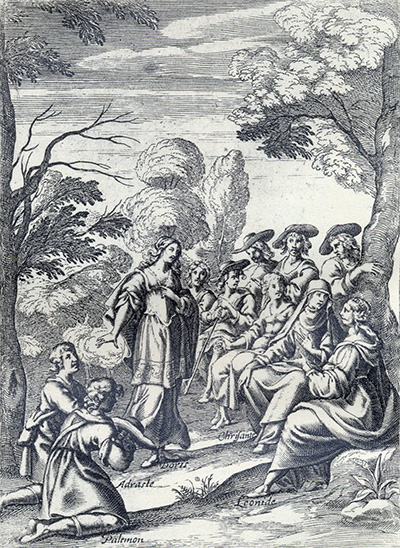
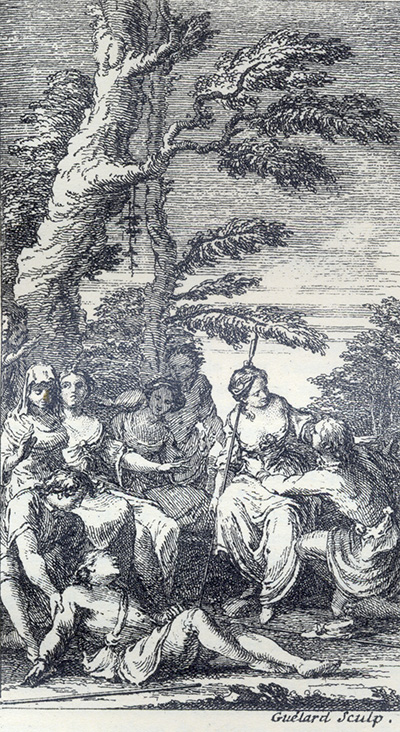
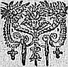

L'Astrée
d'Honoré d'Urfé
Deuxième partie
Livre 9

Léonide, Chrisante et un groupe de bergers assistent
au « procès » de Doris, Palémon et Adraste (II, 9, 561)
L'AstréeII, 9. Édition Vaganay**, 1925Léonide, Chrisante et un groupe de bergers assistent
au « procès » de Doris, Palémon et Adraste (II, 9, 561)
(Voir Illustrations)

Gravure signée Guélard
À la suite du jugement de Léonide, Adraste s'évanouit
pendant que Palémon s'approche de Doris (II, 9, 597)
L'AstréeII, 9. Édition Vaganay**, 1925Gravure signée Guélard
À la suite du jugement de Léonide, Adraste s'évanouit
pendant que Palémon s'approche de Doris (II, 9, 597)
(Voir Illustrations)
Édition de 1610, p. 563.
Édition de Vaganay, p. 355.
SONNET.
Qu'il ne faut point aimer sans
être aimé.
Quand je vois un amant transi,
Qui languit d'un amour extrême,
L'œil triste et le visage blême,
Portant cent plis sur le sourcil,
Quand je le vois plein de souci,
Qui meurt d'Amour sans que l'on l'aime,
Je dis aussitôt en moi-même :
- C'est un grand sot d'aimer ainsi.
Il faut aimer, mais que la belle
η
Brûle pour qui brûle pour elle,
Ou bien c'est pure lâcheté.
L'Amour de l'Amour est extraite ;
La charge n'est jamais bien faite,
Qui penche toute d'un côté.
Amour chasse l'Amour comme un clou
η chasse l'autre.
HISTOIRE
DU BERGER ADRASTE.

Encore que nous remarquions en ces différends qui
sont entre nos mains plusieurs accidents qui
semblent être contraires entre eux, si est-ce qu'il
n'y a rien qui contrevienne à l'amour, car il n'est
pas plus naturel à la flamme de se mouvoir et
d'échauffer qu'à l'amour de produire ces
dissensions entre ceux qui aiment ; et qui voudrait
les ôter d'entre les amants n'entreprendrait pas


Livre 8

Livre 10
Référence électronique :
document.write('"'+document.title.substr(0, document.title.indexOf("-")-1)+'". '+"Dernière mise à jour : "+ExtractDate(document.lastModified)+".")Deux visages de L'Astrée.
©2005-2020 E. Henein.
URL :
var today = new Date();
document.write(document.URL +
"<br>Consulté le : " + today.toLocaleDateString("fr-FR") + ".");
var _gaq = _gaq || [];
_gaq.push(['_setAccount', 'UA-19288475-1']);
_gaq.push(['_trackPageview']);
(function() {
var ga = document.createElement('script'); ga.type = 'text/javascript'; ga.async = true;
ga.src = ('https:' == document.location.protocol ? 'https://ssl' : 'http://www') + '.google-analytics.com/ga.js';
var s = document.getElementsByTagName('script')[0]; s.parentNode.insertBefore(ga, s);
})();
Deux visages de L'Astrée.
©2005-2019 Eglal Henein. Creative Commons 4 
Édition critique de la première partie de L'Astrée (1607, 1621)
mise en ligne le 9 avril 2007
Édition critique de la deuxième partie de L'Astrée (1610, 1621)
mise en ligne le 10 octobre 2010
Édition critique de la troisième partie de L'Astrée (1619, 1621)
mise en ligne le 1er novembre 2014
Édition critique de la quatrième partie de L'Astrée (1624)
mise en ligne le 15 janvier 2019
document.write("Dernière mise à jour : "+ExtractDate(document.lastModified))